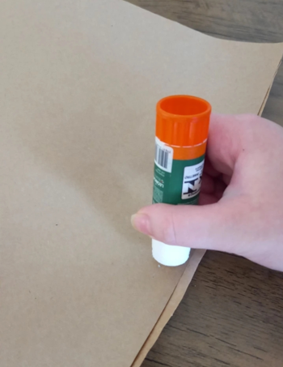
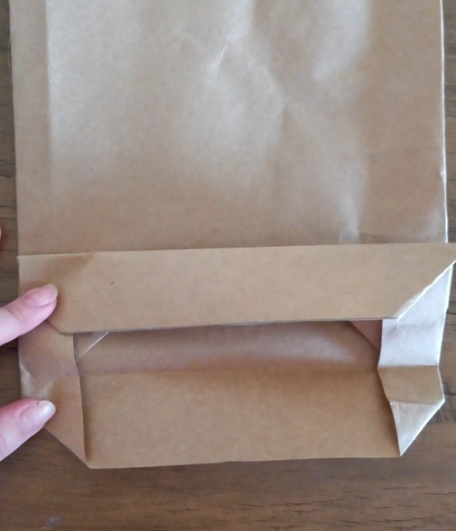
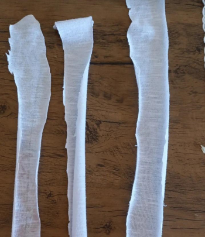
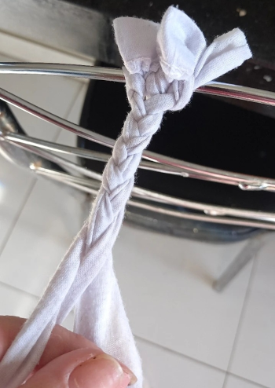
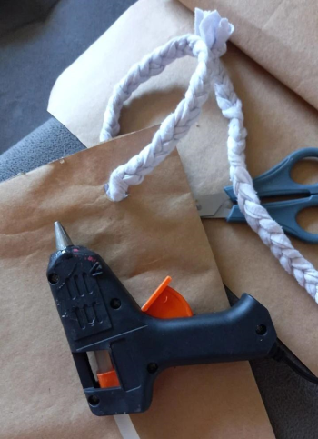

Grupo 01 - B
Integrantes:
- Heloísa Omine
- Isabela Ribeiro
- Julia Marques
- Kethellyn Suellen
- Reginaldo Ferreira
Sacola Sustentável

Sacola Sustentável
Materiais Utilizados
- Papel kraft
- Cola branca
- Caneta preta
- Um pedaço de tecido
- Tesoura
Modo de Preparo
Disponível neste vídeo:
Primeiro, foi colado o papel Kraft.
Depois foi dobrado para fazer o fundo da sacola
Foi recortado três tiras de tecido para fazer as alças da sacola
Trançado as tiras de tecido
E passado a alça no furo que foi feito no topo da sacola
